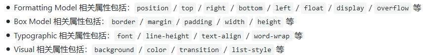

CSS语法规范：
- 选择器 与 { 之间必须包含空格
- 列表型属性值 书写在单行时，‘，’后必须跟一个空格
- 当一个 rule 包含多个 selector 时，每个选择器声明必须独占一行
- >、+、~ 选择器的两边各保留一个空格。
- 选择器的嵌套层级应不大于 3 级，位置靠后的限定条件应尽可能精确
- 属性书写顺序以 Formatting Model（布局方式、位置） > Box Model（尺寸） > Typographic（文本相关） > Visual（视觉效果） 的顺序书写，以提高代码的可读性。

- 当数值为 0 - 1 之间的小数时，省略整数部分的 0。
- url() 函数中的路径不加引号。
- RGB颜色值必须使用十六进制记号形式 #rrggbb。不允许使用 rgb()。
一、字体文本
关于字体：设置一个字体栈，例如
font-family: "Hiragino Sans GB", "Microsoft YaHei", "WenQuanYi Micro Hei", sans-serif;
h1 {
font-family: "Helvetica Neue", Arial, "Hiragino Sans GB", "WenQuanYi Micro Hei", "Microsoft YaHei", sans-serif;
}
.article {
font-family: Arial, sans-serif;
}
关于字体大小：
- px：固定值
- em： 以当前元素的父元素字体大小为基础
- rem：以根元素字体大小为基础
--应用：
- 如果需要统一设定页面文档大小， 让页面在各种尺寸的移动端设备上自适应用rem；
- 当你想要当前元素的 padding，margin，line-height 等值，与当前字体大小成比例的时候，使用 em
关于字体样式：
四种常用属性：
- font-style（斜体？）：italic/ normal
- font-weight（粗体大小）：bold/ normal
- text-transform（转型）：none（无）/uppercase（全大写）/lowercase（全小写）/capitalize（首字母大写）/full-width
- text-decoration（文本装饰）：none/ underline/ overline/ line-through
文字阴影：
text-shadow: 4px 4px 5px red;（水平偏移、垂直偏移、模糊半径、颜色）
文本布局：
text-align: center/left/right/justify
line-height: 1.5
letter-spacing: 2px
word-spacing: 4px;
text-index: 5em; （首行缩进）
二、选择器
简单选择器：元素、类、ID
属性选择器（结合默认属性和数据属性）：
- [ 属性 ]、[属性=" "]、[ 属性~=" "]
- [ 属性 ^ = " "]——开头、$——结尾、*——包含
伪类（:）—— 特定状态下才被呈现到指定的元素 、伪元素（::）—— 某个元素的某个部分
- 偶数子元素：（ section:nth-child(2n) ）
- a:link{}——未访问、a:visited{}——已访问、a:hover{}——鼠标放上、a:active{}——点击激活时
- :before{ content:url(xx.png); }——在元素前插入图片
组合器和选择器组：
- A,B（A和B）
- A B（B是A的后代）
- A>B（B是A的子节点）
- A+B（B是A的下一个兄弟节点）
- A~B（B是A之后任意兄弟节点）
三、CSS背景
所有元素均可添加此属性
background-attachment：fix/scroll(默认)
bachgorund-color：rgb(255,255,0)/blue/#23EFAA;
background-image：url("xx.jpg");
background-repeat:no-repeat/repeat(默认)/repeat-y/repeat-x;
background-position:50% 50%; /center; /10px 40px;
以上属性可写在background:里面
四、CSS列表
ol/ul/dl
list-style-type: none/disc/circle/square/......
list-style-position: inside/outside
list-style-image: url('xxx.png');（最好使用background-image）
五、CSS层叠
重要性（ !important）
专用性
- 千位1：在元素的style属性中申明
- 百位+1：ID选择器个数
- 十位+1：类选择器、伪类、属性选择器
- 个位+1：元素选择器、伪元素
注意(伪类包括元素选择器和伪类）：div ul li:nth-child(2) {}——0013
源码顺序（从上到下）
注意：所有属性均显示，只不过相同属性会覆盖
六、CSS继承
并非所有的属性都会被默认继承（例如a的字体颜色）
并非所有属性继承都有意义
- font-family和color继承是好的（默认本身有继承性）
- padding/margin/border/background-image的继承是不好的（默认不继承）
控制继承：
inherit： 该值将应用到选定元素的属性值设置为与其父元素一样
initial ：重置为浏览器默认值，浏览器无默认值则同inherit
七、框模型
尝试使用box-sizing: border-box;
* {
-webkit-box-sizing: border-box;
-moz-box-sizing: border-box;
box-sizing: border-box;
}//这将在所有浏览器上转换所有元素
这将更改模型构架：


框类型：
三个最常见的类型：block, inline, and inline-block。
将行内元素转换为block（display: block;）——块级元素默认为block
- 设置宽高的约束（居中对齐，宽度响应）：
width:80%;
max-width:1280px;
min-width:500px;
margin:0 auto;
- 图片响应式（随窗口大小缩放）
display:block;
margin:0 auto;
max-width:80%;
为了在不同屏幕大小（特别是移动设备）下都正常显示，使用max-width: 800px;
八、关于浮动与清除浮动、闭合浮动
简单地在结束浮动的元素中加入“clear: both;”由于浮动块脱离文档流，会导致wrap高度塌陷
解决（闭合浮动而非简单清除浮动）方式有两种：
- 在末尾加上一个空元素，设置clear:both属性（div、br、::after都算这种）
- 通过设置父元素overflow: hidden或者display: table属性
参考：https://www.zhihu.com/question/19915431、http://www.iyunlu.com/demo/enclosing-float-and-clearing-float/index.html
最佳方式是应用::after
.clearfix::after{
clear:both;
display:block;
content:".";
height:0;
visibility:hidden;
}
九、关于定位
几种常见的定位：
- static（默认）正常文本流
- relative（相对）正常文本流，以父节点为基础，可使用top/left/right/bottom
- absolute（绝对）脱离文本流 ——可用来弹出信息框和控制菜单；翻转面板；可以在页面上的任何地方拖放的UI功能……
- fix（固定定位）脱离文本流—— 可以创建固定的有用的UI项目，如持久导航菜单。固定在视口中，不随屏幕滚动而移动。
更改层叠顺序：
p:nth-of-type(1) {
z-index: 1;
}
display常用属性值：
block
/inline(+li布局菜单)
/none(隐藏)
/inline block(布局）
十、checkbox hack的使用
不使用JavaScript而是直接用radio/checkbox来控制显示，可用来实现导航栏（分页）、树级菜单、下拉菜单等效果
也可以用js脚本来实现： MDN 定位实战
简述：
<label for="article1">tab1</lable>
<input type="radio" id="article1" checked>
<style>
[type="radio"] {
display: none;//不显示、不占据空间
}
</style>
十一、弹性盒子
可灵活布局，子项宽度高度等量，响应式，可实现垂直居中
step1：对需要布局的元素的父元素设置“display: flex;”
step2：如果宽度溢出父元素，设置“flex-wrap: wrap;”（多行）
step3：如果不想要等宽，可以设置flex：
article {
flex: 1;
}
article:nth-of-type(3) {
flex: 2;
}//第三个宽度是前两个的两倍
//或者
article {
flex: 1 200px;
}
article:nth-of-type(3) {
flex: 2 200px;
}//在宽度都设置为200px后，剩下的空间按比例分配
水平和垂直居中对齐：
align-items的属性值有：stretch（默认）/center/flex-start/...
justify-content的属性值有：flex-start（默认）/center/space-around（均匀分布）/space-between（除两端外均匀分布）
div {
display: flex;
align-items: center; //交叉轴居中
justify-content: space-around; //主轴居中
}
项排序：
调整order属性值（默认为0），从小到大排列，可为负值
十二、响应式布局
媒体查询（当浏览器变窄到一定程度就显示成一列）
@media screen and (min-width:600px) {
nav {
float: left;
width: 25%;
}
section {
margin-left: 25%;
}
} //当宽度大于600px
@media screen and (max-width:599px) {
nav li {
display: inline;
}
} //当宽度小于599px